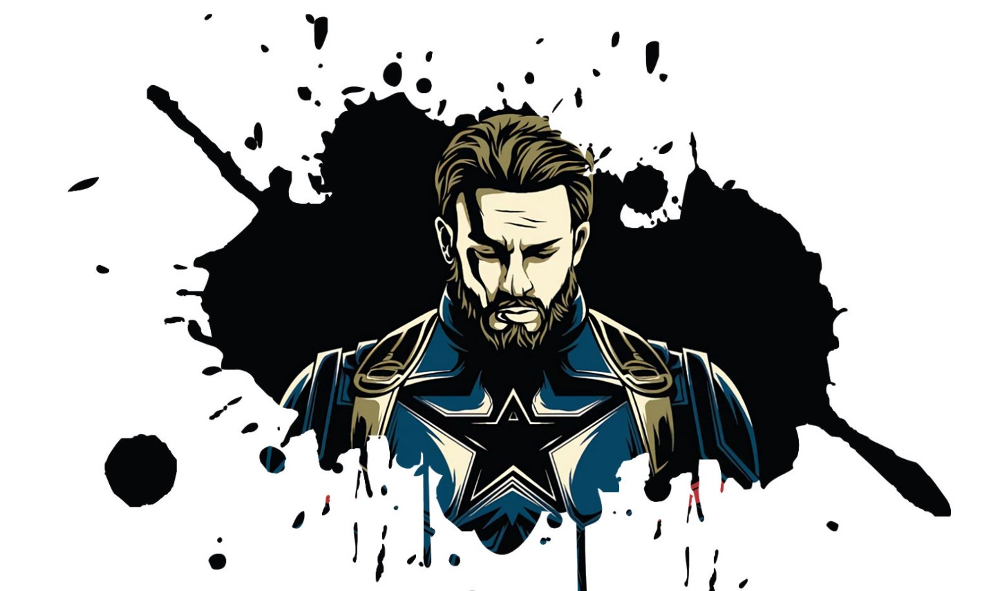

“A Single Individual Who Has The Right Heart And The Right Mind, That Is Consumed With A Single Purpose... That One Man Can Win A War.”
“A Single Individual Who Has The Right Heart And The Right Mind, That Is Consumed With A Single Purpose... That One Man Can Win A War.”
Recipient of the Super Soldier serum, World War II hero Steve
Rogers fights for American ideals as one of the world’s mightiest
heroes and the leader of the Avengers.
Captain Steven Grant "Steve" Rogers is a World War II veteran, a
founding member of the Avengers, and Earth's first known
superhero. Rogers grew up suffering from numerous health problems,
and upon America's entry into World War II, he was rejected from
serving in the United States Army despite several attempts to
enlist. Rogers ultimately volunteered for
Project Rebirth, where he was the only recipient of the Super
Soldier Serum developed by Abraham Erskine under the Strategic
Scientific Reserve. The serum greatly enhanced Rogers physical
abilities to superhuman levels. After Erskine's assassination and
being doubted by SSR head director Chester Phillips, Rogers was
relegated to performing in war bond campaigns, where he posed as a
patriotic mascot under the moniker of Captain America.